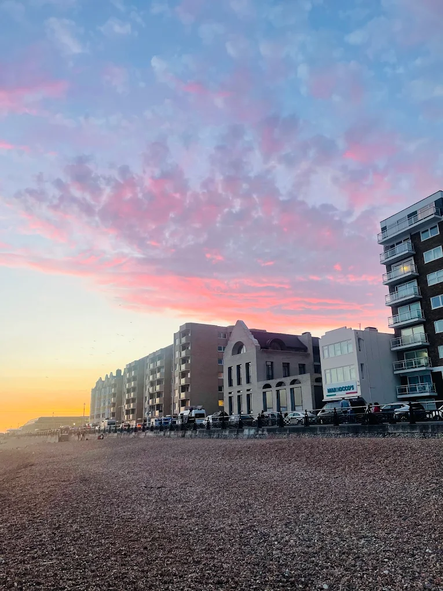
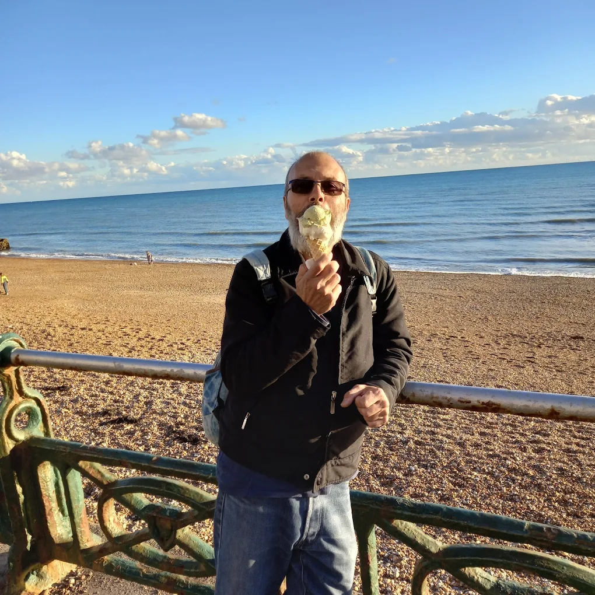

What to Know about Marrocco's
Project Objective
The goal of this study was to modernise the digital footprint of a 55-year Hove institution without losing its historic soul. Marrocco’s is defined by its decades of heritage and seafront charm; the challenge was to create a UI that feels "Freshly Italian"—balancing the nostalgia of a traditional trattoria with the high-speed performance of a modern web application.

When Heritage Meets Digital
I approached this project as an exercise in "Brand Preservation." By utilizing a palette of Mediterranean blues and crisp whites, I aimed to evoke the feeling of the King's Esplanade. This conceptual build focuses on a "Menu-First" architecture, ensuring that whether a customer is looking for authentic seafood or their famous gelato, the path to discovery is seamless and visually appetizing.

Translating the Seafront Experience
Designing for a business with such a strong physical presence meant the website had to feel premium, enticing. I implemented high-contrast typography and expansive whitespace to mimic the open feel of the Hove lawn. This project demonstrates my ability to adapt my design preferences to fit a brand that is loud, vibrant, and deeply rooted in its local community.